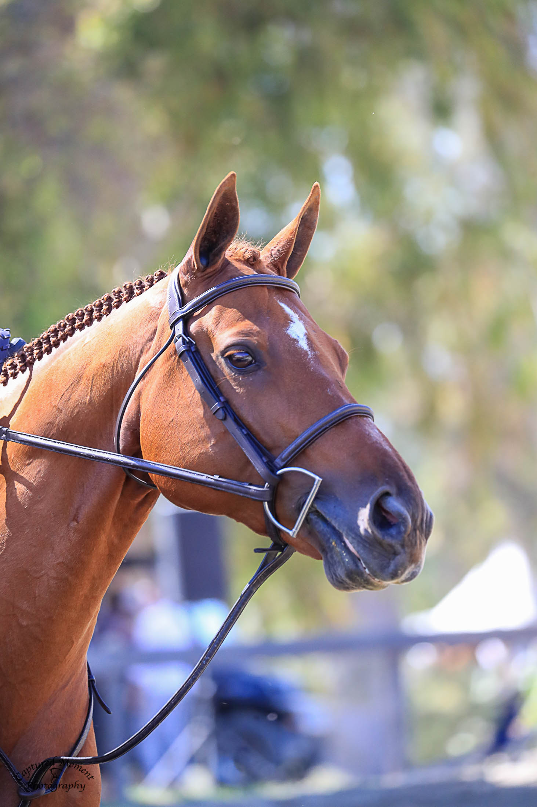

My name is Ava Jaggars, and I am a 15-year-old equestrian. I have been riding horses for 10 years and currently compete as a junior. I ride at True Blue Farms with my trainers Natasha Pappas, Rachel Rothert, and Lyric Sue. I spend a lot of time at the barn and ride at least 5 times a week. I try to ride before school most days so I can join a school sport. I compete for my zone, zone 10, and nationally. My most recent competition was The Oaks National I, July 15-20. It was not my first time competing in a championship, but it was my first time on grass. This is a big achievement for me, and it was an amazing opportunity to compete against such talented riders.
Lindsey Long Photography - Ava Jaggars
My horse is named Dalton; his show name is Daltone Du Parc. He was imported from France 2 years ago, and we bought him in February 2024. I am extremely grateful to have him in my life. Dalton is an incredible horse, standing at 15.3 hands and qualifying as a small junior horse. He jumps up to 3 feet and 6 inches and primarily competes as a hunter. Dalton is 11 years old and is the best boy ever.
Captured Moment Photography - Daltone Du Parc
Equestrian means anything related to horseback riding. This encompasses many different expressions such as dressage, show jumping, and eventing. It involves a lot of hard work and practice, requiring skill and horsemanship. Equestrian is a hard sport because not only do you have to control yourself and how you ride, but you also have to control another living creature. Horses have a mind of their own and most of the time do not want to listen to somebody telling them what to do. It takes a talented rider to create that special bond with a horse and find the trust necessary to compete at high levels. With a lot of time and patience, anybody can become a proper equestrian!
How judges score a round.
View my gallery!